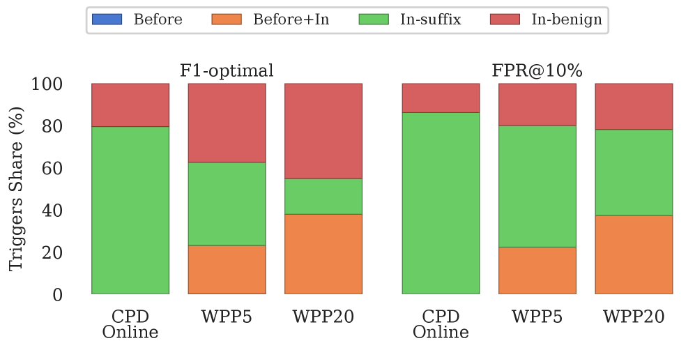

Detecting Fluent Optimization-Based Adversarial Prompts via Sequential Entropy Changes
通过序列熵变化检测流畅的优化型对抗提示
rlhfsupply-chain-attack
Mohammed Alshaalan, Miguel R. D. Rodrigues
启示 · Relevance
This method directly supports your research on logprob-based and entropy-maximization jailbreaks (Area 1) by providing a detection mechanism that exploits the very sequential entropy signature such attacks produce, enabling you to both evaluate attack stealth and build automated defenses without training.
Figure 1: Top: benign prompt where the CUSUM statistic W t + W_{t}^{+} (purple) stays below threshold h h (orange) at slack k = 0 k=0 (the canonical Page-CUSUM setting used for Table 1 ; Appendix A ). Bottom: adversarial prompt (AdvPrompter); a sustained upward shift in token entropy after the suffix onset (green) causes W t + W_{t}^{+} to cross h h , triggering an alarm at time τ \tau (red).
The shaded region denotes the ground-truth adversarial suffix.
For comparison the WPP 15 baseline (brown dash-dot, plotted as the non-overlapping window-mean NLL the detector actually scores) and its F1-optimal threshold (brown dotted) are overlaid: on this fluent attack WPP 15 never crosses its threshold while CPD’s W t + W_{t}^{+} does.图1：上：良性提示，其中CUSUM统计量 W_t^+（紫色）在松弛度 k=0（表1和附录A中使用的标准Page-CUSUM设置）下保持在阈值 h（橙色）以下。下：对抗性提示（AdvPrompter）；后缀起始（绿色）后token熵的持续上升导致 W_t^+ 超过 h，在时间 τ（红色）触发警报。阴影区域表示真实对抗性后缀。为比较，还叠加了WPP 15基线（棕色点划线，绘制为检测器实际评分的非重叠窗口均值NLL）及其F1最优阈值（棕色虚线）：在此流畅攻击中，WPP 15从未超过其阈值，而CPD的 W_t^+ 则超过了。
Summary
CPD Online detects fluent optimization-based adversarial suffixes by monitoring sequential entropy changes, achieving superior F1 and localization without training.
Key Takeaways
- Adversarial suffix detection is cast as an online change-point detection problem over token-level entropy, outperforming static and windowed perplexity baselines.
- CPD Online is model-agnostic, training-free, and runs online, localizing the onset of adversarial suffixes with 79.6% of triggers inside the suffix.
- On LLaMA-2-7B, CPD achieves AUROC 0.88 and F1 0.82 at the canonical CUSUM setting (k=0), improving over all windowed-perplexity baselines.
- When used as a lightweight gate for LLaMA Guard, CPD reduces guard calls by 17-22% on benign-dominated deployments without degrading detection quality.
- The method is evaluated on 1,012 optimization-based suffix attacks (GCG, AutoDAN, AdvPrompter, BEAST, AutoDAN-HGA) and 1,012 benign prompts across six open-weight chat models.
0) Metadata
Title: Detecting Fluent Optimization-Based Adversarial Prompts via Sequential Entropy Changes
Alias: cpd-online
Authors: Mohammed Alshaalan, Miguel R. D. Rodrigues
This paper proposes a training-free, online change-point detector that uses token-level entropy to catch fluent adversarial suffixes missed by perplexity-based methods, achieving state-of-the-art F1 and localization.
2) CRGP
C — Context
Optimization-based adversarial suffixes can jailbreak aligned LLMs while remaining fluent, evading static and windowed perplexity-based detectors. Existing defenses often require retraining or are computationally expensive, and they struggle to localize the adversarial content within a prompt.
R — Related work
Static perplexity filtering (e.g., using a fixed threshold on whole-prompt perplexity) is easily bypassed by fluent attacks.
Windowed perplexity (WPP) methods slide a window over tokens but still fail on fluent suffixes and do not localize well.
LLM-based guard models (e.g., LLaMA Guard) are effective but computationally expensive for high-volume deployment.
Change-point detection (e.g., CUSUM) has been used in time-series anomaly detection but not previously applied to token-level entropy for adversarial prompt detection.
G — Gap
Existing perplexity-based detectors are brittle against fluent optimization-based suffixes and cannot precisely locate the adversarial region within a prompt. There is a need for a lightweight, online detector that can both flag adversarial prompts and identify the suffix onset without retraining.
P — Proposal
CPD Online models the token-level next-token entropy stream as a time series and applies a one-sided CUSUM statistic to detect a sustained upward shift after the adversarial suffix begins. It uses the LLM's system prompt to estimate a robust baseline entropy, standardizes user-token entropies, and triggers an alarm when the cumulative sum exceeds a threshold. The detector is model-agnostic, training-free, and runs online, providing both prompt-level classification and suffix localization.
---
4) Experiments
Main results
On LLaMA-2-7B at k=0, CPD achieves AUROC 0.88 and F1 0.82, outperforming the strongest windowed-perplexity baseline (WPP with w=15) which achieves F1 0.74. CPD concentrates 79.6% of its triggers inside the adversarial suffix versus 17-46% for WPP. As a gate for LLaMA Guard, CPD reduces guard calls by 17-22% on a benign-dominated deployment while preserving detection quality.
Ablation
Ablation on the CUSUM slack parameter k shows that k=0 (canonical Page-CUSUM) yields the best F1 on LLaMA-2-7B; increasing k to 0.5 reduces sensitivity. The locality analysis (Figure 2) confirms that CPD's triggers are far more concentrated in the suffix region than any WPP window size.
Limitations
["The method relies on the LLM's own next-token entropy, which may be noisy or biased for certain model families.", 'The benchmark includes only optimization-based suffix attacks; other attack types (e.g., prefix attacks, in-context manipulation) are not evaluated.', "The detector's threshold is tuned per fold via cross-validation, which may not generalize to unseen distributions without calibration."]
5) Why it matters
Provides a principled connection between sequential change-point detection and adversarial prompt detection, opening a new direction for lightweight defenses.
Demonstrates that token-level entropy dynamics are a rich signal for detecting fluent attacks, even when perplexity is controlled.
The ability to localize the adversarial suffix enables targeted interventions (e.g., selective masking or re-prompting) rather than whole-prompt rejection.
The training-free, model-agnostic nature makes it easy to deploy across different LLMs without additional compute.
6) Next steps
[ ] Evaluate CPD on a broader set of attack types, including prefix attacks, multi-turn jailbreaks, and adaptive attacks that explicitly try to evade entropy-based detection.
[ ] Explore adaptive thresholding or Bayesian change-point methods to reduce sensitivity to per-fold tuning.
[ ] Combine CPD with other lightweight signals (e.g., token-level logit variance) to improve robustness against entropy-smoothing attacks.
[ ] Test CPD as a real-time filter in production LLM serving pipelines to measure latency and throughput impact.
7) Scoring
4/5 = base 1 + quality 2 + observation 1
Figure 1: Top: benign prompt where the CUSUM statistic W t + W_{t}^{+} (purple) stays below threshold h h (orange) at slack k = 0 k=0 (the canonical Page-CUSUM setting used for Table 1 ; Appendix A ). Bottom: adversarial prompt (AdvPrompter); a sustained upward shift in token entropy after the suffix onset (green) causes W t + W_{t}^{+} to cross h h , triggering an alarm at time τ \tau (red).
The shaded region denotes the ground-truth adversarial suffix.
For comparison the WPP 15 baseline (brown dash-dot, plotted as the non-overlapping window-mean NLL the detector actually scores) and its F1-optimal threshold (brown dotted) are overlaid: on this fluent attack WPP 15 never crosses its threshold while CPD’s W t + W_{t}^{+} does.图1：上：良性提示，其中CUSUM统计量 W_t^+（紫色）在松弛度 k=0（表1和附录A中使用的标准Page-CUSUM设置）下保持在阈值 h（橙色）以下。下：对抗性提示（AdvPrompter）；后缀起始（绿色）后token熵的持续上升导致 W_t^+ 超过 h，在时间 τ（红色）触发警报。阴影区域表示真实对抗性后缀。为比较，还叠加了WPP 15基线（棕色点划线，绘制为检测器实际评分的非重叠窗口均值NLL）及其F1最优阈值（棕色虚线）：在此流畅攻击中，WPP 15从未超过其阈值，而CPD的 W_t^+ 则超过了。

Figure 2: Locality breakdown for LLaMA-2-7B: distribution of triggers across regions before the suffix, before+in (boundary-straddling), in-suffix , and in-benign . Left: F1-optimal threshold. Right: FPR@10% on benign prompts.
For readability we plot CPD Online and representative WPP windows (WPP 5 , WPP 20 ); the full sweep over w ∈ { 5 , 10 , 15 , 20 } w\in\{5,10,15,20\} is in
Appendix B.1 .图2：LLaMA-2-7B的局部性分解：触发器在后缀前、前+中（边界跨越）、后缀内和良性内的区域分布。左：F1最优阈值。右：良性提示上的FPR@10%。为便于阅读，我们绘制了CPD Online和代表性WPP窗口（WPP 5, WPP 20）；w ∈ {5, 10, 15, 20}的完整扫描见附录B.1。Figure 3: A second AdvPrompter example to reinforce Figure 1 .
Token-level entropy (blue) and CUSUM statistic W t + W_{t}^{+} (purple) at the canonical slack k = 0 k=0 used throughout the main paper, with the WPP 15 baseline curve (brown dash-dot) and its F1-optimal threshold (brown dotted) overlaid for comparison. Top: benign prompt, no CPD alarm. Bottom: adversarial prompt (a different AdvPrompter suffix from Figure 1 ); CPD’s W t + W_{t}^{+} crosses h h inside the shaded suffix region, while WPP 15 stays below its threshold throughout.图3：第二个AdvPrompter示例以强化图1。Token级熵（蓝色）和CUSUM统计量 W_t^+（紫色）在全文使用的标准松弛度 k=0 下，叠加了WPP 15基线曲线（棕色点划线）及其F1最优阈值（棕色虚线）以作比较。上：良性提示，无CPD警报。下：对抗性提示（与图1不同的AdvPrompter后缀）；CPD的 W_t^+ 在阴影后缀区域内超过 h，而WPP 15在整个过程中保持在其阈值以下。Figure 4: Aggregate CPD Online CUSUM trajectories by prompt type (LLaMA-2-7B benchmark). Top: k = 0 k=0 . Bottom: k = 0.5 k=0.5 . Curves show the median W t + W_{t}^{+} across prompts with an interquartile band. For adversarial prompts, the green dashed line marks the aligned suffix onset; the orange dashed line marks the threshold h h used for visualization (a representative pooled F1-optimal value; main-paper Table 1 numbers are evaluated with per-fold CV thresholds). The flat segments visible after each attack’s rise (e.g. GCG, AdvPrompter, BEAST) reflect aggregation rather than a saturating detector: prompts of varying length are padded by holding the final W t + W_{t}^{+} value beyond the per-prompt end, so the median plateaus once most prompts at that aligned offset have terminated.图4：按提示类型聚合的CPD Online CUSUM轨迹（LLaMA-2-7B基准）。上：k=0。下：k=0.5。曲线显示各提示的中位数 W_t^+ 及四分位距带。对于对抗性提示，绿色虚线标记对齐的后缀起始；橙色虚线标记用于可视化的阈值 h（代表性的合并F1最优值；主文表1的数字通过每折交叉验证阈值评估）。每次攻击上升后可见的平坦段（例如GCG、AdvPrompter、BEAST）反映的是聚合效应而非检测器饱和：不同长度的提示通过将最终 W_t^+ 值保持到每个提示结束后来填充，因此一旦大多数提示在该对齐偏移处终止，中位数即进入平台期。Figure 5: Locality breakdown for LLaMA-2-7B at the F1-optimal threshold for CPD Online and WPP with w ∈ { 5 , 10 , 15 , 20 } w\in\{5,10,15,20\} . Bars are grouped by locality category (Before / Before+In / In-suffix / In-benign) and are decomposed by attack family using hatch fill within each method’s bar.图5：LLaMA-2-7B在F1最优阈值下的局部性分解（CPD Online和WPP，w ∈ {5, 10, 15, 20}）。柱状图按局部性类别（前/前+内/后缀内/良性内）分组，并在每个方法的柱内通过填充图案按攻击族分解。
Figure 1: Top: benign prompt where the CUSUM statistic W t + W_{t}^{+} (purple) stays below threshold h h (orange) at slack k = 0 k=0 (the canonical Page-CUSUM setting used for Table 1 ; Appendix A ). Bottom: adversarial prompt (AdvPrompter); a sustained upward shift in token entropy after the suffix onset (green) causes W t + W_{t}^{+} to cross h h , triggering an alarm at time τ \tau (red).
The shaded region denotes the ground-truth adversarial suffix.
For comparison the WPP 15 baseline (brown dash-dot, plotted as the non-overlapping window-mean NLL the detector actually scores) and its F1-optimal threshold (brown dotted) are overlaid: on this fluent attack WPP 15 never crosses its threshold while CPD’s W t + W_{t}^{+} does.图1：上：良性提示，其中CUSUM统计量 W_t^+（紫色）在松弛度 k=0（表1和附录A中使用的标准Page-CUSUM设置）下保持在阈值 h（橙色）以下。下：对抗性提示（AdvPrompter）；后缀起始（绿色）后token熵的持续上升导致 W_t^+ 超过 h，在时间 τ（红色）触发警报。阴影区域表示真实对抗性后缀。为比较，还叠加了WPP 15基线（棕色点划线，绘制为检测器实际评分的非重叠窗口均值NLL）及其F1最优阈值（棕色虚线）：在此流畅攻击中，WPP 15从未超过其阈值，而CPD的 W_t^+ 则超过了。Figure 2: Locality breakdown for LLaMA-2-7B: distribution of triggers across regions before the suffix, before+in (boundary-straddling), in-suffix , and in-benign . Left: F1-optimal threshold. Right: FPR@10% on benign prompts.
For readability we plot CPD Online and representative WPP windows (WPP 5 , WPP 20 ); the full sweep over w ∈ { 5 , 10 , 15 , 20 } w\in\{5,10,15,20\} is in
Appendix B.1 .图2：LLaMA-2-7B的局部性分解：触发器在后缀前、前+中（边界跨越）、后缀内和良性内的区域分布。左：F1最优阈值。右：良性提示上的FPR@10%。为便于阅读，我们绘制了CPD Online和代表性WPP窗口（WPP 5, WPP 20）；w ∈ {5, 10, 15, 20}的完整扫描见附录B.1。Figure 3: A second AdvPrompter example to reinforce Figure 1 .
Token-level entropy (blue) and CUSUM statistic W t + W_{t}^{+} (purple) at the canonical slack k = 0 k=0 used throughout the main paper, with the WPP 15 baseline curve (brown dash-dot) and its F1-optimal threshold (brown dotted) overlaid for comparison. Top: benign prompt, no CPD alarm. Bottom: adversarial prompt (a different AdvPrompter suffix from Figure 1 ); CPD’s W t + W_{t}^{+} crosses h h inside the shaded suffix region, while WPP 15 stays below its threshold throughout.图3：第二个AdvPrompter示例以强化图1。Token级熵（蓝色）和CUSUM统计量 W_t^+（紫色）在全文使用的标准松弛度 k=0 下，叠加了WPP 15基线曲线（棕色点划线）及其F1最优阈值（棕色虚线）以作比较。上：良性提示，无CPD警报。下：对抗性提示（与图1不同的AdvPrompter后缀）；CPD的 W_t^+ 在阴影后缀区域内超过 h，而WPP 15在整个过程中保持在其阈值以下。Figure 4: Aggregate CPD Online CUSUM trajectories by prompt type (LLaMA-2-7B benchmark). Top: k = 0 k=0 . Bottom: k = 0.5 k=0.5 . Curves show the median W t + W_{t}^{+} across prompts with an interquartile band. For adversarial prompts, the green dashed line marks the aligned suffix onset; the orange dashed line marks the threshold h h used for visualization (a representative pooled F1-optimal value; main-paper Table 1 numbers are evaluated with per-fold CV thresholds). The flat segments visible after each attack’s rise (e.g. GCG, AdvPrompter, BEAST) reflect aggregation rather than a saturating detector: prompts of varying length are padded by holding the final W t + W_{t}^{+} value beyond the per-prompt end, so the median plateaus once most prompts at that aligned offset have terminated.图4：按提示类型聚合的CPD Online CUSUM轨迹（LLaMA-2-7B基准）。上：k=0。下：k=0.5。曲线显示各提示的中位数 W_t^+ 及四分位距带。对于对抗性提示，绿色虚线标记对齐的后缀起始；橙色虚线标记用于可视化的阈值 h（代表性的合并F1最优值；主文表1的数字通过每折交叉验证阈值评估）。每次攻击上升后可见的平坦段（例如GCG、AdvPrompter、BEAST）反映的是聚合效应而非检测器饱和：不同长度的提示通过将最终 W_t^+ 值保持到每个提示结束后来填充，因此一旦大多数提示在该对齐偏移处终止，中位数即进入平台期。Figure 5: Locality breakdown for LLaMA-2-7B at the F1-optimal threshold for CPD Online and WPP with w ∈ { 5 , 10 , 15 , 20 } w\in\{5,10,15,20\} . Bars are grouped by locality category (Before / Before+In / In-suffix / In-benign) and are decomposed by attack family using hatch fill within each method’s bar.图5：LLaMA-2-7B在F1最优阈值下的局部性分解（CPD Online和WPP，w ∈ {5, 10, 15, 20}）。柱状图按局部性类别（前/前+内/后缀内/良性内）分组，并在每个方法的柱内通过填充图案按攻击族分解。
![Figure 1: Top: benign prompt where the CUSUM statistic W t + W_{t}^{+} (purple) stays below threshold h h (orange) at slack k = 0 k=0 (the canonical Page-CUSUM setting used for Table 1 ; Appendix A ). Bottom: adversarial prompt (AdvPrompter); a sustained upward shift in token entropy after the suffix onset (green) causes W t + W_{t}^{+} to cross h h , triggering an alarm at time τ \tau (red).
The shaded region denotes the ground-truth adversarial suffix.
For comparison the WPP 15 baseline (brown dash-dot, plotted as the non-overlapping window-mean NLL the detector actually scores) and its F1-optimal threshold (brown dotted) are overlaid: on this fluent attack WPP 15 never crosses its threshold while CPD’s W t + W_{t}^{+} does.](figures/1167/fig_001.png)
![Figure 3: A second AdvPrompter example to reinforce Figure 1 .
Token-level entropy (blue) and CUSUM statistic W t + W_{t}^{+} (purple) at the canonical slack k = 0 k=0 used throughout the main paper, with the WPP 15 baseline curve (brown dash-dot) and its F1-optimal threshold (brown dotted) overlaid for comparison. Top: benign prompt, no CPD alarm. Bottom: adversarial prompt (a different AdvPrompter suffix from Figure 1 ); CPD’s W t + W_{t}^{+} crosses h h inside the shaded suffix region, while WPP 15 stays below its threshold throughout.](figures/1167/fig_003.png)
![Figure 4: Aggregate CPD Online CUSUM trajectories by prompt type (LLaMA-2-7B benchmark). Top: k = 0 k=0 . Bottom: k = 0.5 k=0.5 . Curves show the median W t + W_{t}^{+} across prompts with an interquartile band. For adversarial prompts, the green dashed line marks the aligned suffix onset; the orange dashed line marks the threshold h h used for visualization (a representative pooled F1-optimal value; main-paper Table 1 numbers are evaluated with per-fold CV thresholds). The flat segments visible after each attack’s rise (e.g. GCG, AdvPrompter, BEAST) reflect aggregation rather than a saturating detector: prompts of varying length are padded by holding the final W t + W_{t}^{+} value beyond the per-prompt end, so the median plateaus once most prompts at that aligned offset have terminated.](figures/1167/fig_004.png)